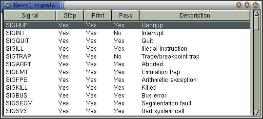
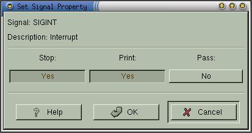

|
|
Anjuta Manual version 0.1Copyright (c) Kh. Naba Kumar Singh |
| Contents | Index | Shortcuts |
| PREV:Stack Trace | UP:Contents(Debugging) | NEXT:CPU registers |
Kernel signals is a way of signaling between processes in Linux. You can get the list of signals available for the program by activating View->Kernel Signals. This will bring up a window which will list all the signals available in you system along with their brief description.

You will also find three columns which specifies what to do when the signal is received:
This tells the debugger whether to stop the program execution (and return the control to you) when the program receives this signal.
This tells the debugger whether to Display the received signal.
This tells the debugger whether to pass the signal to the program.
Changing the behavior:
You can change the way debugger behaves when a particular signal is received. To change it, select the signal in the given list. Right click to pop-up the operation menu. Activate Modify Signal. This will bring up a dialog box. You can set the three behaviors and click OK to commit the change.

Sending the signal to the program:
You can explicitly sent the signal to the program being debugged. To do this, select the signal in the given list. Right click to pop-up the operation menu. Activate Send to process. A confirmation will be asked. Click OK to confirm. This will send the signal to the program.
Updating the signal list:
Activating the menu item Update from the operation menu (right click to pop it up) will refresh the Kernel signals window.